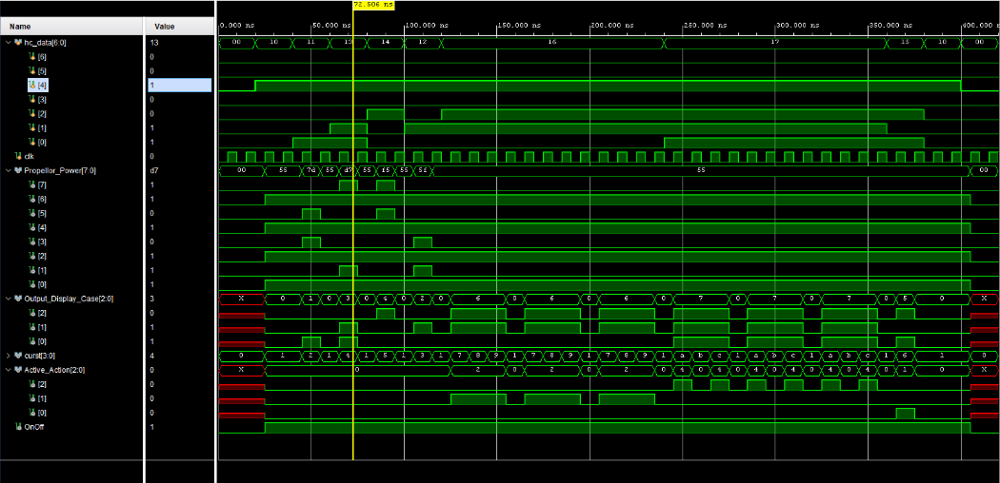
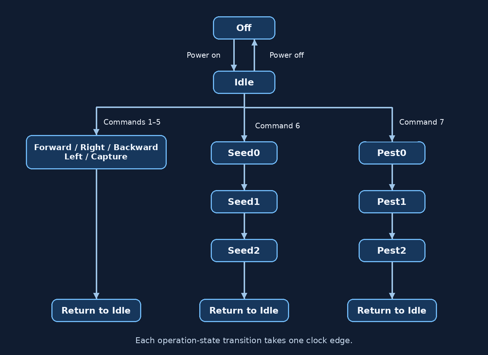

ECE 230 · Verilog · Vivado
Agricultural Drone Controller
Simulated a 13-state controller with single-bit command error correction.
Command decoding
For this project in ECE 230, I built a Hamming (7,4) decoder that uses parity checks to correct a single-bit error in an incoming command. The corrected command feeds the finite-state machine.
State sequencing
The 13-state controller handles power, movement and multi-cycle operations. Separate output logic updates the propeller power, action signals and seven-segment display.
Simulation
I used a Verilog testbench to exercise the state machine and inspected the Vivado waveform to verify the order and timing of state changes and outputs.

State behavior
The controller starts in Off and waits for a power-on command. In Idle it checks the decoded power bit and dispatches commands using the three low bits. A direction or capture command occupies one clock cycle before returning to Idle.
Commands 6 and 7 run three-clock sequences. The seed output stays active in Seed0 through Seed2. The Pest sequence asserts its action output in the first and third states and clears it in the middle state. Each sequence returns to Idle after its final state.

View Verilog state-transition logic
always @ (posedge clk)
begin
case(curst)
// Off state - check for power on command
Off:
begin
if(hc_data[4] == 1 && OnOff == 0)
curst <= Idle; // Power on transition
end
// Include all other state transitions
Idle:
begin
if (!hc_data[4]) curst <= Off;
else case (hc_data[2:0])
1: curst <= Forward;
2: curst <= Right;
3: curst <= Backward;
4: curst <= Left;
5: curst <= Capture;
6: curst <= Seed0;
7: curst <= Pest0;
endcase
end
Forward, Right, Backward, Left, Capture:
curst <= Idle;
Seed0: curst <= Seed1;
Seed1: curst <= Seed2;
Seed2: curst <= Idle;
Pest0: curst <= Pest1;
Pest1: curst <= Pest2;
Pest2: curst <= Idle;
endcase
end